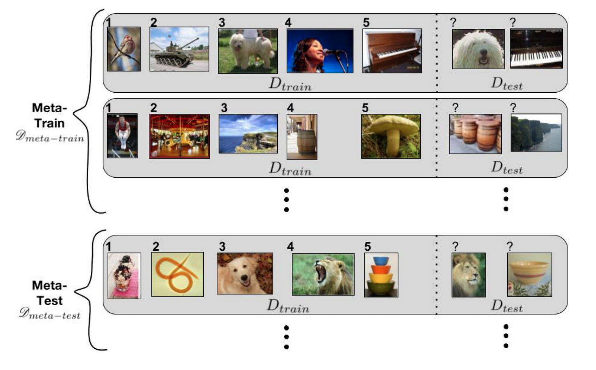
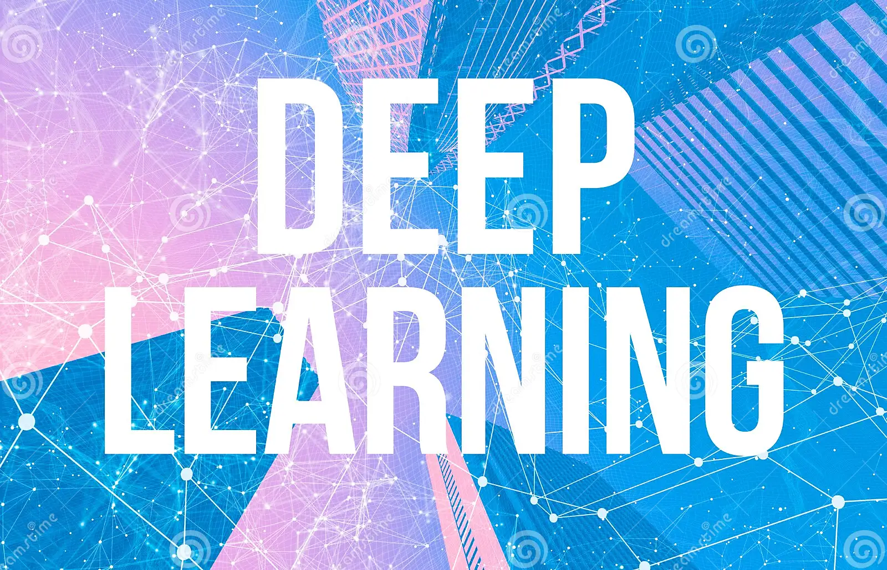
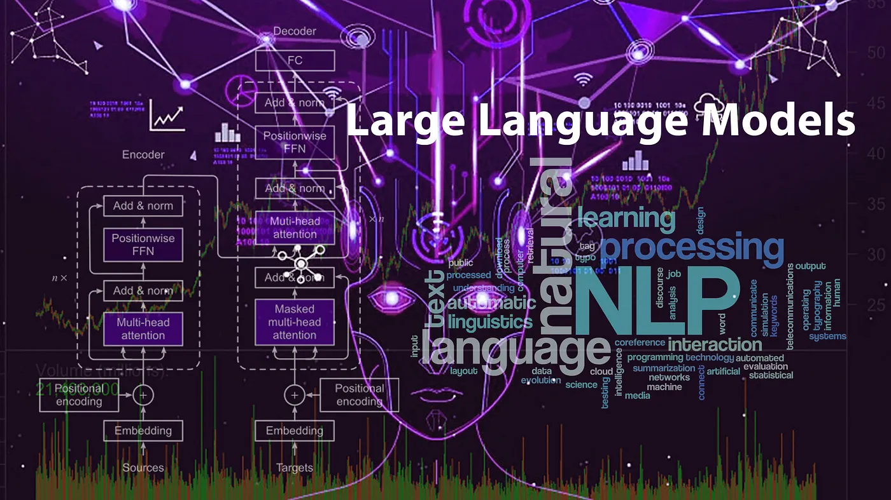
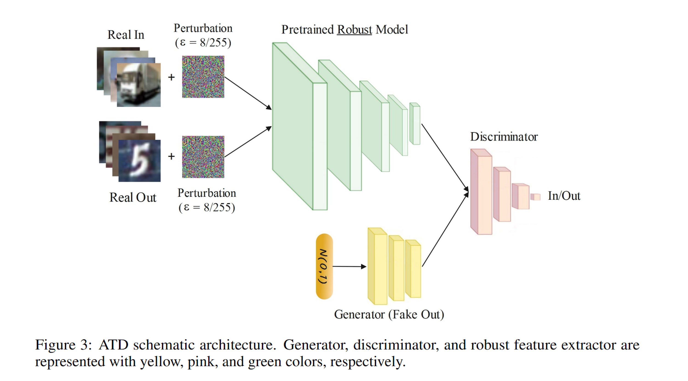

Security and Privacy in Machine Learning
In my projects on security and privacy in Machine Learning, I have implemented a diverse set of techniques and methods, including neural networks with numpy, convolutional neural networks (CNN), defensive distillation, denoising autoencoders (AE), differentially private stochastic gradient descent (SGD), and robust adversarial training. Additionally, I have explored advanced approaches such as Jacobian-based data augmentation, natural evolutionary strategies, random noise defense, and strategies to mitigate poisoning attacks. My work aims to enhance the robustness and privacy of Machine Learning models, addressing various threats and challenges in the field.

Advanced Machine Learning
In my projects on Advanced Machine Learning, I have delved into a rich array of techniques and methodologies, implementing multi-task learning algorithms with multi-head architecture using the Omniglot dataset as a foundation. Additionally, I've explored the world of meta-learning through the utilization of algorithms like SNAIL and MAML. In the realm of reinforcement learning, I've ventured into skill discovery with methods such as DADS and DIAYN. My research has also extended to the development of multi-task and meta reinforcement learning algorithms, as well as the exploration of continual learning techniques like GEM. These endeavors collectively contribute to a deeper understanding and proficiency in the ever-evolving field of Machine Learning.

Deep Learning
In my Deep Learning course projects, I've explored a wide spectrum of deep learning techniques and applications. I've implemented Convolutional Neural Networks (CNN) for image classification, delved into the fundamentals of deep learning, and harnessed Long Short-Term Memory (LSTM) and Gated Recurrent Unit (GRU) models for sequential data analysis. Additionally, I've developed expertise in Time Series Prediction, employed Variational Autoencoders (VAE) for generative modeling, and delved into the intricacies of Word Embeddings, including Word2Vec and GloVe, for Natural Language Processing (NLP). Furthermore, I've ventured into the realm of Image-to-Image Translation using the pix2pix framework and explored Spam Classification leveraging deep learning methodologies. These projects collectively enhance my proficiency in deep learning across various domains and applications.

Natural Language Processing
In my journey through Natural Language Processing (NLP), I've engaged in diverse projects covering a range of NLP challenges and applications. One noteworthy project is the ongoing development of a Persian Language Model (LLM), a collaboration with the Machine Learning Lab and Natural Language Processing and Digital Humanities Lab. In this role, I handle data preparation in Persian for LLM training as a member of the Data Preparation Team, and lead the Training Team in overseeing the model training process. These experiences have deepened my NLP expertise and enriched my skills in language modeling and multilingual NLP. You can find some of these NLP projects on my GitHub.

Adversarially Trained Discriminator
Out-of-distribution (OOD) detection has recently gained substantial attention due to the importance of identifying out-of-domain samples in reliability and safety. Although OOD detection methods have advanced by a great deal, they are still susceptible to adversarial examples. To mitigate this issue, we propose the Adversarially Trained Discriminator (ATD), which utilizes a pre-trained robust model to extract robust features, and a generator model to create OOD samples. This method could significantly outperform previous methods.

Borderless Azerbaijani Processing
Despite recent advancements in neural language models, low-resource languages like Azerbaijani in Iran often lag behind in benefiting from these breakthroughs. Our research addresses this gap by proposing a transliteration model that utilizes an Azerbaijani parallel dataset to bridge the gap between the Latin and Persian scripts. This facilitates cultural exchange and enhances transfer learning, surpassing traditional methods with a minimum 15% increase in BLEU scores and a 1/3 reduction in edit distance. Explore our model's effectiveness at this link.